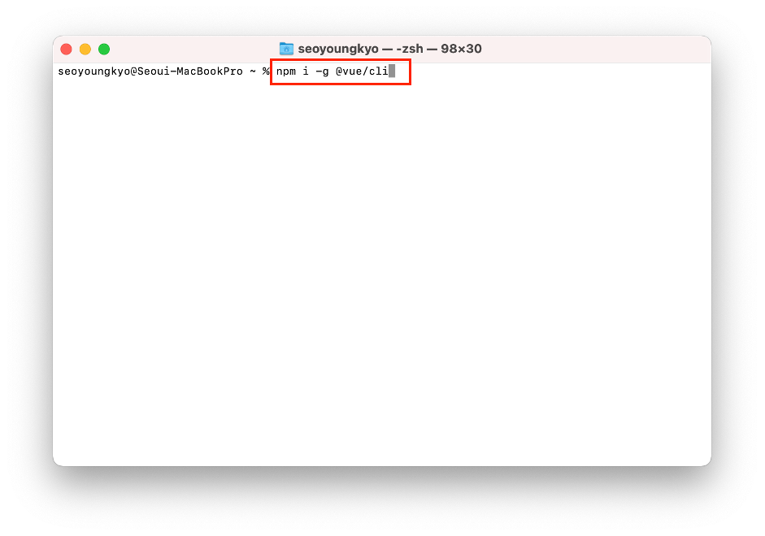
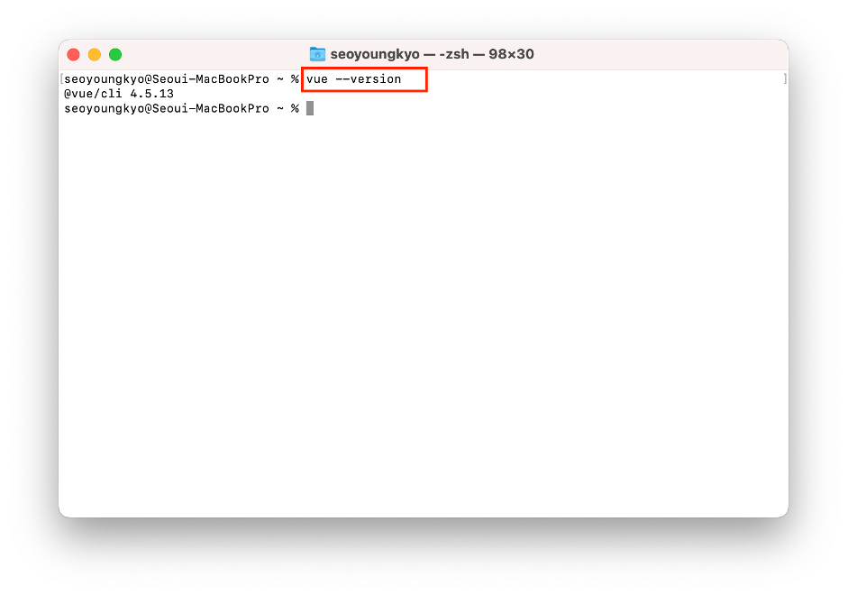

Vue.js 프로젝트 시 기본 준비 사항에 대한 내용이며,
서술된 Node.js 설치 이후 Vue.js 설치 및 프로젝트 설정은 터미널을 통해 이루어지기 때문에 기본적인 터미널 사용 방법은 숙지가 되어야 합니다.
터미널은 OS에서 기본적으로 제공하며, Windows 10의 경우 파워쉘(Power Shell)을 이용하며, 필요에 따라 에디터에서 제공하는 터미널을 이용해도 무관합니다.
- 8.11 이상 버전의 Node.js를 설치합니다. 주 이때 현재 버전(최신 기능)이 아닌 LTS버전을 설치하시기 바랍니다.
(작성일 기준 LTS버전은 14.17.5) 설치 과정에 있어 자동으로 NPM(Node Package Manager)은 설치가 되므로 따로 설치가 필요 없으며,
설치 시 옵션(설치 경로 등)은 기본으로 설정되어 있으니 변경 등을 하지 않습니다.
- 설치 후 버전 확인은 터미널 실행 후 아래의 명령어를 입력합니다. 터미널은 OS에서 제공하는 기본 터미널(Windows 10의 경우 파워쉘 실행 후 입력하면 됩니다.
1. Node.js 버전 확인 명령어 :
2. NPM 버전 확인 명령어 :
- 에디터(VS Code)의 터미널을 이용하거나 각 OS에서 기본으로 제공하는 터미널을 이용할 수 있지만 프로젝트 생성 및 필요 라이브러리 등의 추가를 위해서는 아래의 터미널 기본 용어는 숙지하시기 바랍니다.
1. 터미널 청소 :
2. 폴더(파일) 리스트 :
3. 폴더 이동 :
4. 상위 폴더 이동 :
1. 파워쉘 청소 :
2. 폴더(파일) 리스트 :
3. 폴더 이동 :
4. 상위 폴더 이동 :
- 프로젝트 생성 및 사용할 라이브러리(패키지) 설치를 위해 npm 명령어 또한 기본적으로 숙지가 되어야 함에 따라 기본적인 명령어는 아래의 url에서 확인하시기 바랍니다.
- 기본 사항인 node.js 설치 후 진행하시기 바랍니다. (node.js설치 바로가기)
- Vue.js는 문서 작성일 기준으로 3.2.6까지 릴리즈가 됐으며, 설치방법은 3가지 방법으로 설치 할 수 있습니다.
- 설치 방법은 위와 같으며, 해당 문서에서는 CLI를 설치하는 방법만 설명합니다.
1. CDN을 통한 import
2. npm을 사용하여 import
3. CLI(Command-Line Interface) 설치
- 터미널에 아래의 명령어를 입력하며, 최신 버전인 4.x의 경우 Node.js의 버전은 최소 8.9 이상이어야 하며, v10 이상을 추천합니다. 필요에 따라 nvm(Node Version Manager)을 통해 설치된 Node.js 버전을 관리합니다.
- 설치 시 권한(checkPermissions) 관련 에러 후 설치가 되지 않을 경우 아래의 명령어 앞에 sudo를 추가 후 설치하시면 됩니다.
1. 설치 명령어 : npm install --global @vue/cli 또는 npm i -g @vue/cli

- 설치 완료 후 설치된 버전으로 아래의 명령어를 터미널에 입력 후 확인 합니다.
1. 버전 확인 명령어 :

- 삭제는 npm의 삭제 명령어를 통해 삭제를 할 수 있습니다.
아래 명령어 중 1번째 명령어 입력 후 에러(checkPermissions) 후 삭제가 되지 않는 경우가 있는데 이는 대부분 권한 문제이니 아래의 명령어 중 2번째 명령어를 입력 후 계정(컴퓨터) 비밀번호를 입력하면 삭제가 됩니다.
1. 삭제 명령어 :
2. 권한 에러 시 삭제 명령어 :
- 기존 설치된 버전에서 최신 버전으로 업(다운)그레이드 가능하며, 필요에 따라 원하는 버전으로 업(다운)그레이드를 할 수 있습니다.
1. 업그레이드 명령어 :
2. 다운그레이드(특정 버전 설치) :
1. SPA의 모든 장점
1. SEO
2. Layout
3. Router 수동 등록
4. 프로젝트 폴더 구조 고민 필요